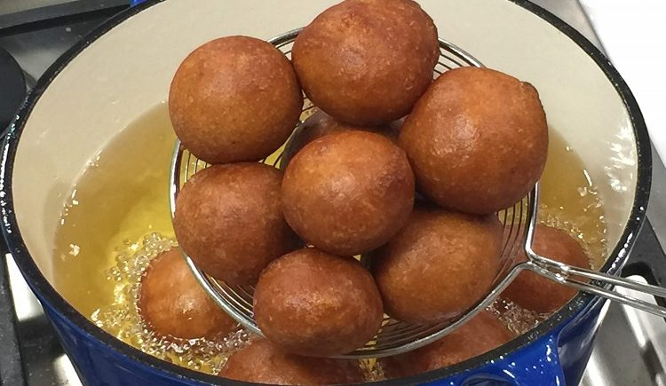

Puff-Puff Recipe

Image source: sweetadjeley.com
Puff-puff is deep-fried yeasted dough. This delicious snack is popular in West African cuisine.
It is commonly served at breakfast or dinner, with fried hot pepper sauce and/or fried beans.
Ingredients for About 50 Puff-puff Balls
- 1 kg All-purpose flour
- 1 L Milk
- 14 g Fast-acting yeast
- 1 teaspoon of salt
- 250 g of sugar
- 10 g vanilla sugar
- 2 L vegetable oil or other oil for deep frying
Directions
- Mix all the dry ingredients (salt, sugar, vanilla sugar, flour, yeast) in a big bowl, pot, or container (5 to 10L) and mix well.
- Add the milk and mix with your hands until you get a consistent wet smooth batter.
- Put a lid on the bowl/container and let it stand at room temperature for 4-5 hours for the batter to rise (to about 2X).
- Heat the oil (medium-high setting) in a deep fryer (or deep pot) till the oil is hot enough for frying.
- Mix the batter again with your hands for about a minute.
- Drop small quantities of dough into the hot oil and fry until golden brown. See the technique in the video for dropping batter in oil.
- Fry in batches of 10, 15, or more, depending on the size of your deep fryer or pot.
- Don't make the puff-puff ball too big. The inside of an oversize puff-puff will be undercooked.
- When unsure, open up one puff-puff from the first batch to check that it is well done.
Back to the List of Recipes